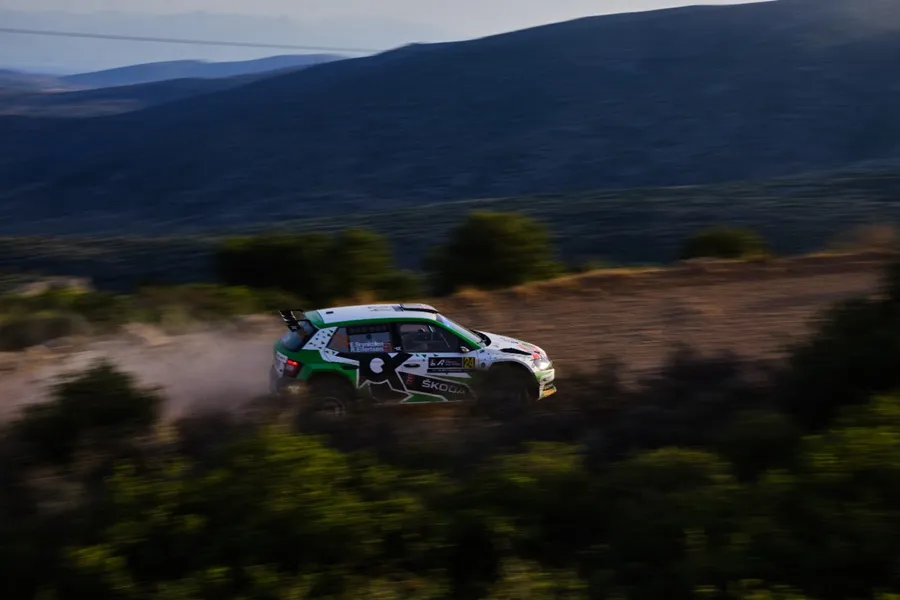
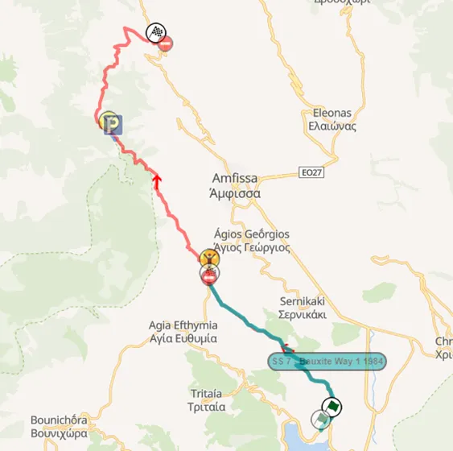
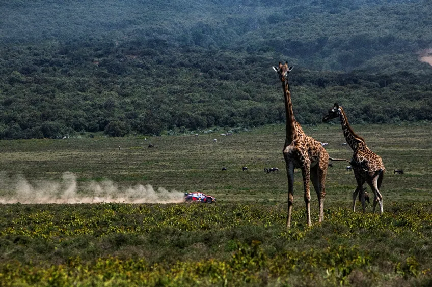
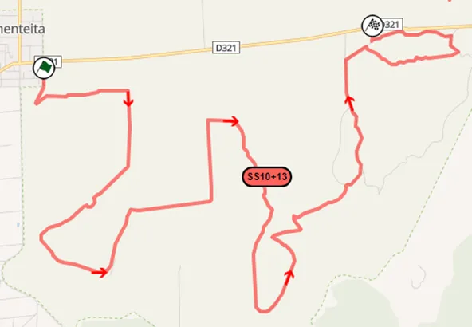
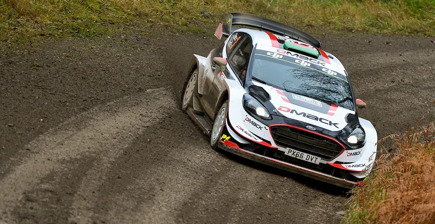
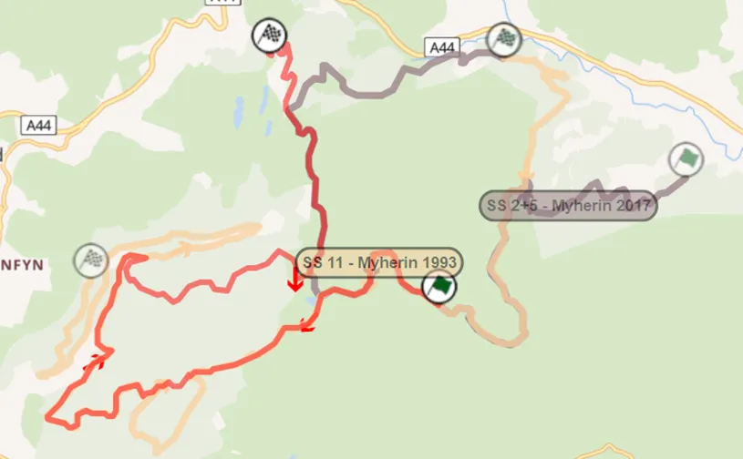
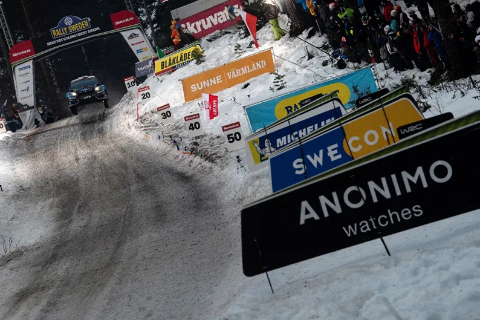
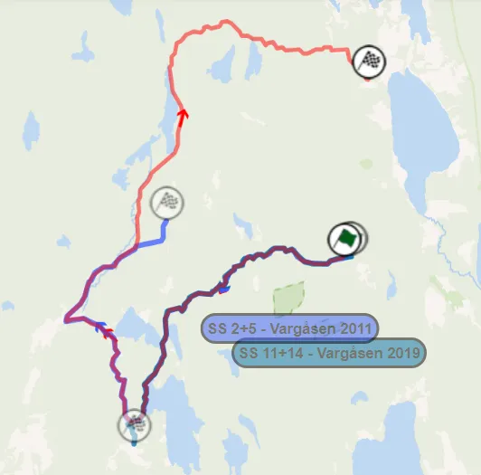
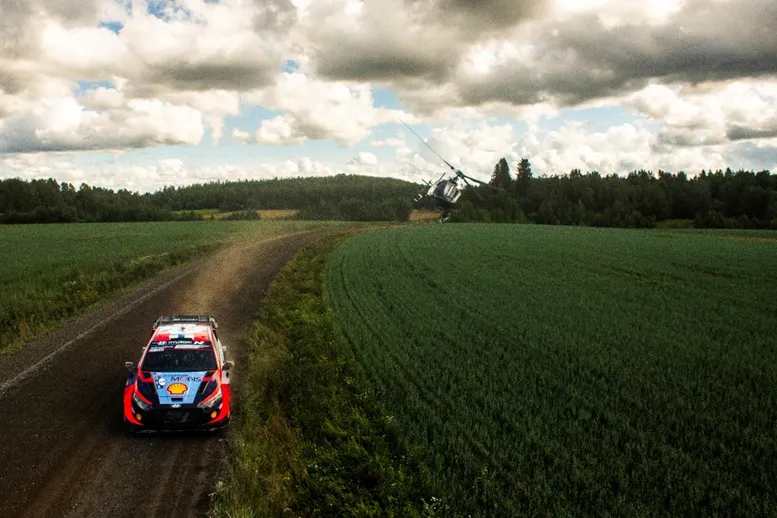
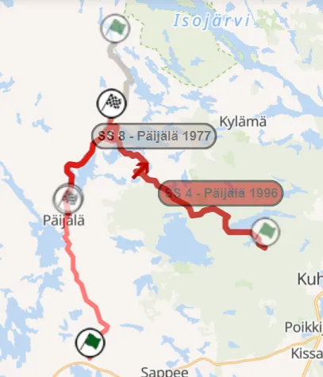

Top 30 Stages in WRC History: 11-15
The poll is closed, and the results are ready to be announced!
We asked you for your favorite WRC stages and you had your say. Each voter selected 15 stages out of a pool of 100, and the 30 stages that had the most votes, combined with our experts’ ratings made it to our list. This was a collaboration between us and Antti from itgetsfasternow.com, this list wouldn’t have been possible without him, so please go check his blog. He will have his own unique post based on this list when all the stages are revealed.
Throughout this month we’ll be going through the results, let's see what's special about these 5 stages, as we we make our way to the top 10:
15 – Bauxites – Rally Acropolis

Bauxites is a Rally Acropolis classic. This stage north of Itea is a staple of the Rally of the Gods. The traditional route of Bauxites starts near the sea and climbs up the mountain with a fast but rough piece of road. It ends at the motorway, where Karoutes also ends if you remember from the first part of this list. In the modern WRC, Bauxites extends to the village of Prossilio, with the stage extending to 22 kilometers. The stage is also famous for its surface. It has a red hue, because of the bauxite mineral from which the stage takes its name from.
Famous moments include, Sebastien Loeb going fastest and going in the lead of the rally in 2022, Evgeny Novikov winning the stage with a surprising performance in 2009 and Harri Rovanpera getting a puncture and dropping to 8th from 2nd in 2003.

The map of modern Bauxites and its traditional route.
14 – Sleeping Warrior – Rally Safari


Sleeping Warrior is an iconic Safari stage. It’s difficult to judge Safari stages from pre 2021 because they were very long, so I am just going to mention the stage in its 2021-23 layout. It’s worth mentioning that in 2001, Sleeping Warrior was part of the monster 84km Mbaruk stage, as well as two other modern Safari stages namely Soysambu and Elmenteita. In all the 3 years Sleeping Warrior has featured in the WRC, it has had rain in all of them! It’s a rough stage consisting of long straights and junctions, with a twisty technical section towards the end.
Famous moments include many drivers having off-road moments in 2023, Ott Tanak retiring because of a broken propshaft and Thierry Neuville retiring after hitting a tree as well as Sebastien Loeb breaking his suspension in 2022 and Gus Greensmith and Taka Katsuta having off road moments in the rain in 2021.

Sleeping Warrior's route.
13 – Myherin – Wales Rally GB

Myherin is a staple of the RAC rally. First used all the way back in 1968, with the layout that it became famous for coming in 1996. Myherin is known for its fantastic flow, as a great deal of the stage uses wide and fast roads, and the iconic pass through the wind turbines. The stage is, as you can imagine, fast for the most part, but also uses a variety of roads, with 90o bends, hairpins and many narrow passes with gates also featuring.
Famous moments include Craig Breen rolling into a ditch in 2019, Breen again rolling in 2016, Mikko Hirvonen crashing out in 2013 and Jari Matti Latvala losing the lead because of a puncture in 2010.

With red is the most common layout of Myherin. In grey is the one used in 2017 and 2018, and in beige is the older 30+km one from the 90s.
12 – Vargåsen – Rally Sweden

Vargåsen is another stage synonymous with the rally it features in. The name “Vargåsen” first appeared in a Rally Sweden itinerary in 1997, but parts of this stage have been used ever since the early 80s. Vargåsen grew more popular among drivers and fans alike, when in 2008 the Rally Sweden organisers decided to pay tribute to the late Colin McRae by hosting a contest of who could jump the furthest in a big crest in Vargåsen, the infamous Colin’s Crest, with the driver that had the longest jump winning the Colin's Crest Award. Despite it being the slowest stage of the rally in 2019, the stage itself starts off technical, but the section heading to Colin’s Crest and to the finish of the stage is fast. It has also used a number of different layouts, running a 40km version in the early 2000s, a 25km one for a good chunk of the late 00s and early 2010s, with the latest version being a 15km one, that ended just a bit after Colin’s Crest. The stage is now used in the Royal Rally of Scandinavia.
Famous moments include, Teemu Suninen going off in 2019, Neuville’s big jump from 2018, Kris Meeke going off in 2017, Mikko Hirvonen retiring after a big jump in 2006, Petter Solberg having a superb run in 2004, going 16s faster than the rest in both passes while battling against Marcus Gronholm for the lead.

The main 3 versions of Vargåsen. With red is the 40km one, with blue is the 25km one and with turquoise it's the 15km one.
11 – Päijälä – Rally Finland

We travel back to Finland, for Päijälä. This
stage first featured in a 1000 Lakes rally back in 1977, and has featured ever
since, apart from a 10-year hiatus from 2003 to 2014. Päijälä has used a variety
of layouts throughout the years. The modern layout is an extension of the one
used in the 70s and 80s, sometimes also ran in reverse. In the 90s it
had a different finish, with a more technical section. All in all, Päijälä is a
very fast, technical stage with many jumps. The stage is tricky, and has caught out a lot of drivers along the years.
Famous moments include, Takamoto Katsuta’s spin in 2023, Elfyn Evans snatching the lead away from Breen and Taka Katsuta crashing in 2021, Tanak going 8.5s faster than everyone en route to his first Rally Finland victory, Eric Camilli crashing out in 2016 and Hannu Mikkola retiring because of a broken steering in 1984.

How Päijälä has evolved through the years.
Written by Dimitris Theodorou in collaboration with Antti from itgetsfasternow.com
Pictures in this post come from the Rally Acropolis website and the Red Bull Content Pool.
Screenshots of the stage routes are from Rally-Maps.com


Comments